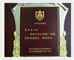
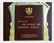
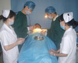

- 国务院津贴专家何长民 名誉院长
- 我们宣誓：提高医术，提升医德，坚决捍卫患者权利 在提到建设专业男科诊疗队伍时，何长民教授指出，南宁中山泌尿医院每位专家都蕴涵着深厚的人文关怀，他们从细节做起，以患者健康为最高行为准则，不懈地提高专业素质，使每一位到中山就医的患者，都能够拥有健康、从容、快乐的生活。他坚称，扎实过硬的学术理论基础，丰富的临床经验是解决病人身体疾病的最基本最必要的条件，而悬壶济世、仁济救人的高尚情操则是患者心灵的慰藉。为了促进患者身心同治，早日痊愈，南宁中山医院的全体男科专家宣誓：提高医术，提升医德，坚决捍卫患者权利！
南宁泌尿医院通过报刊、杂志、网络等媒体，他们用专业的知识信条为广大男性提供了健康指导
-
南宁中山泌尿医院拥有一支以追求先进医疗技术、刻苦钻研创新的行医队伍。积极风险，刻苦钻研是保持与世界先进医疗水平同步的有力武器。为了保证思想与知识与时俱进，南宁中山医院泌尿科积极参与国际与国内重大男科学术论团，引进先进理论建设。专家队伍在学术研究和实际的临床工作中取得了丰硕了成果。
 
 -
何长民 《器官移植并发症》、《器官移植免疫学》、《自制CZ-1液对兔心肌组织低温延时保存的生化学指标观察》、《无细胞百日咳菌苗的抗原性和免疫原性研究》、《临床肾脏保存2086例经验》等
许耕宇 1987年研制的“慢性前列腺炎局部给药导管”系国内外首创，获国家发明三等奖，为前列腺炎治疗提供了一种新的治疗方法。 1994年主创的“前列腺综合辩证治疗临床应用”获南宁市卫生局重大科技成果三等奖。先后撰写论文40余篇，编写各种医学专业书籍12本，另有7篇论文刊登于国外著名杂志，先后获各类国家专利证书4项。
他们奔赴在治疗第一线，诊疗室、手术台、病房……都留下了他们的足迹和汗水，兢兢业业，如履薄冰，只为患者健康负责，只为了帮助患者解除病痛的折磨，患者健康，他们才能绽放更加灿烂的笑容！
- 
- 时间：2011年10月13日
地点：刘金波医生办公室
人物：刘金波医生 王姓患者 - 事件概述：王先生发现自己生殖器边缘出现了类似于绿豆大小的透明水泡，且浑身无力发热。自查症状初步判断为生殖器疱疹，前往南宁中山医院（泌尿）治疗。该院的刘金波医生接待了他，根据他的情况给与《基因吞噬免疫增强法》治疗，两周后病情好转。图为王姓男子前往刘金波办公室处复诊。
- 时间：2012年10月13日
地点：刘金波医生办公室
人物：刘金波医生 王姓患者 - 事件概述：王先生发现自己生殖器边缘出现了类似于绿豆大小的透明水泡，且浑身无力发热。自查症状初步判断为生殖器疱疹，前往南宁中山医院（泌尿）治疗。该院的刘金波医生接待了他，根据他的情况给与《基因吞噬免疫增强法》治疗，两周后病情好转。图为王姓男子前往刘金波办公室处复诊。
- 时间：2012年02月13日
地点：刘金波医生办公室
人物：刘金波医生 王姓患者 - 事件概述：王先生发现自己生殖器边缘出现了类似于绿豆大小的透明水泡，且浑身无力发热。自查症状初步判断为生殖器疱疹，前往南宁中山医院（泌尿）治疗。该院的刘金波医生接待了他，根据他的情况给与《基因吞噬免疫增强法》治疗，两周后病情好转。图为王姓男子前往刘金波办公室处复诊。
- 时间：2012年02月22日
地点：刘金波医生办公室
人物：刘金波医生 王姓患者 - 事件概述：王先生发现自己生殖器边缘出现了类似于绿豆大小的透明水泡，且浑身无力发热。自查症状初步判断为生殖器疱疹，前往南宁中山医院（泌尿）治疗。该院的刘金波医生接待了他，根据他的情况给与《基因吞噬免疫增强法》治疗，两周后病情好转。图为王姓男子前往刘金波办公室处复诊。
- 时间：2011年10月13日
地点：医生办公室
人物：刘金波医生 王姓患者 - 事件概述：王先生发现自己生殖器边缘出现了类似于绿豆大小的透明水泡，且浑身无力发热。自查症状初步判断为生殖器疱疹，前往南宁中山医院（泌尿）治疗。该院的刘金波医生接待了他，根据他的情况给与《基因吞噬免疫增强法》治疗，两周后病情好转。图为王姓男子前往刘金波办公室处复诊。
- 时间：2011年10月13日
地点：刘金波医生办公室
人物：医生 王姓患者 - 事件概述：王先生发现自己生殖器边缘出现了类似于绿豆大小的透明水泡，且浑身无力发热。自查症状初步判断为生殖器疱疹，前往南宁中山医院（泌尿）治疗。该院的刘金波医生接待了他，根据他的情况给与《基因吞噬免疫增强法》治疗，两周后病情好转。图为王姓男子前往刘金波办公室处复诊。